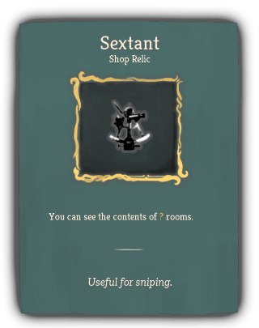
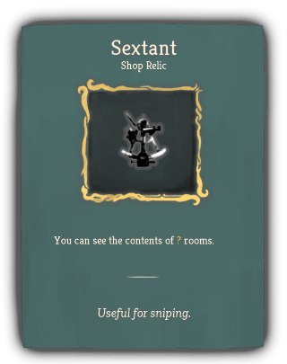

| Name |
Image |
Tier |
Pool |
Description |
Flavor |
| Typewriter |
 |
Starter |
Sleuth_gray_color |
When a card Purges, apply 1 Weak and 1 Vulnerable to an enemy. |
Type up an UNPLEASANT NOTE to increase the enemy's SICK BURN levels. |
| Bowen Stilson Dogg |
 |
Common |
Sleuth_gray_color |
At the start of each combat, discard 1 card from your draw pile. |
The dreaded bust. |
| Jester of Encumbrance |
 |
Uncommon |
|
At the start of each combat, choose a card in your draw pile and give it to an enemy. That card is put into your hand when the enemy is slain. |
Exiled from CLOWN TERRITORY for the crime of BEING MISPLACED BY THE CLOWN PONTIFICATE. |
| Elf Eggs |
 |
Rare |
|
Whenever you Smith, increase your Max HP by 3. |
You yearn to crack out the succulent yolk. |
| HAMPER OF THE JADED FOOL'S ENNUI |
 |
Special |
Sleuth_gray_color |
Start each combat with 10 Thorns. |
The Clown Pontificate (hereafter: "CP") has granted one (1) boon (hereafter: "the product") in exchange for the services rendered by you to slay the spire. The product may be leased for up to three combat encounters (hereafter: "battles") due to the eventuality in which the merchant (hereafter: "dead-o") is murdered. The product will be returned to CP within 3-4 business days. |
| Salted Melon |
 |
Special |
Sleuth_gray_color |
Whenever you enter a Rest Site, increase your Max HP by 3. |
The tastiest QUEST OF SPIRIT is satisfied. |
| Tectrixcalibur |
 |
Special |
Sleuth_gray_color |
Enemies cannot intend to attack for more than 30 damage. |
Heads will roll. |
| Affinity Crow |
 |
Boss |
|
Whenever an enemy gains Strength, gain 1 Strength and 1 Dexterity. |
Caw! |
| Megaton Key |
 |
Boss |
|
Gain [E] at the start of your turn.
Upon pickup, lose your leftmost 2 relics. |
These brass knuckles are so heavy. |
| Call of Fluthlu |
 |
Shop |
Sleuth_gray_color |
At the start of your turn, add a Dazed into your hand. |
Surprisingly surprising. |
| Jammed Printer |
 |
Shop |
Sleuth_gray_color |
You draw cards from the 2nd from top position of your draw pile. |
It's stuck! |
| Sextant |
   |
Shop |
|
You can see the contents of ? rooms. |
Useful for sniping. |


{kind=link}